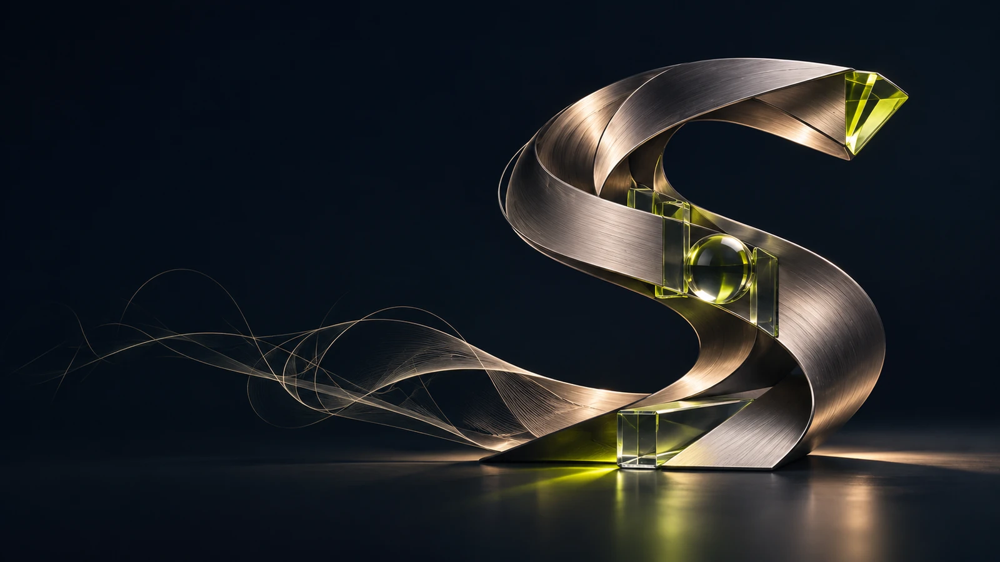
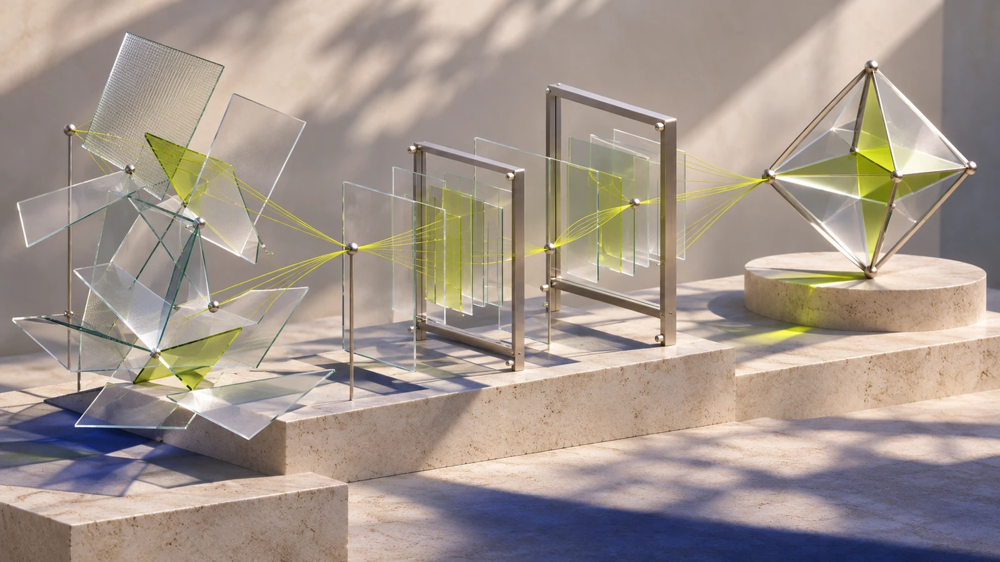

Decision Recheck
An open-source toolkit for checking product promises against requirements and evidence.
Explore on GitHubSoftware experiments, practical tools and a curiosity for what comes next. Welcome to Selimoglu Idea Foundry.

A collection of questions turned into software. Choose a project to explore its focus and source.
An open-source toolkit for checking product promises against requirements and evidence.
Explore on GitHub
Idea Foundry brings together experiments in software, digital products and practical tools. Each project starts with a question, then takes shape through exploration and making.
For new ideas and meaningful collaboration, connect on LinkedIn.
Connect on LinkedIn